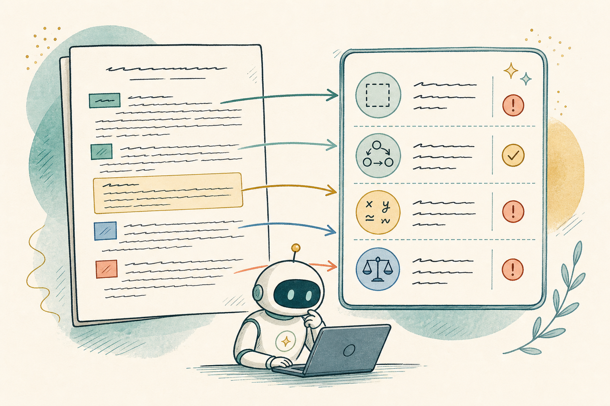
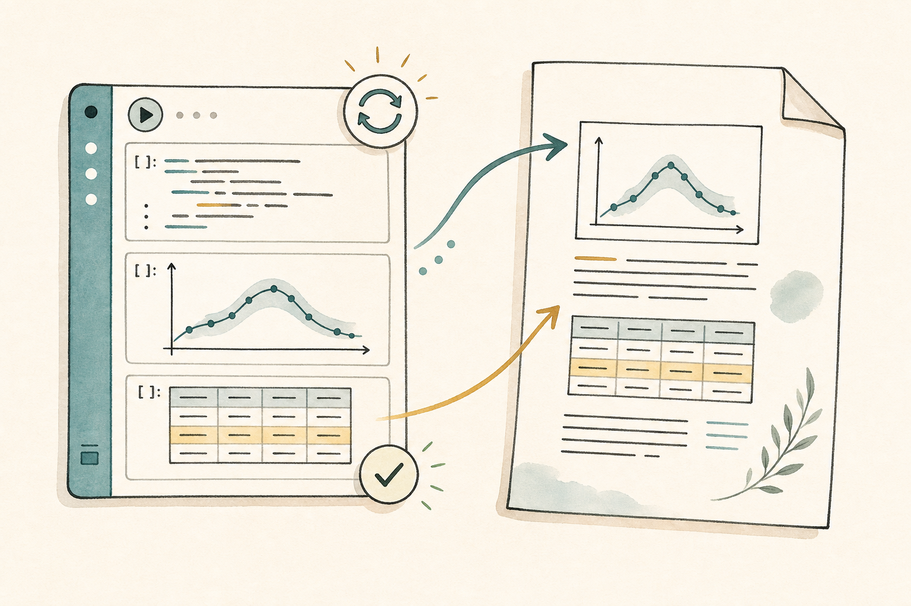
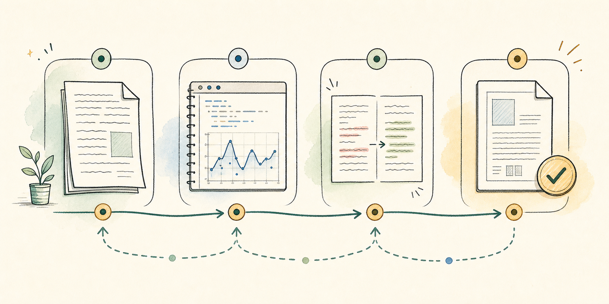

A CoCalc-AI field guide for math grad students
From Notebook to Paper
Polish a LaTeX draft, regenerate the evidence behind a result, and keep every change reviewable with Codex, Jupyter, and project history working in the same place.

This guide follows Maya, a second-year math graduate student turning a
rough note into a paper draft. She already has the usual pieces:
paper.tex, a bibliography, a few figures, and a notebook
that produced one important table.
The point is not to let an agent write the mathematics. The point is to keep the paper, computations, and review loop close enough that good judgment stays cheap.
Set up the paper desk
Maya opens one CoCalc project and creates a workspace rooted at
papers/spectral-gap. That workspace becomes the
boundary for the files, terminals, notebooks, and Codex thread for
this paper.
Ask for a structural read, not a rewrite
She opens the workspace Agent and asks Codex to read the draft like a careful collaborator:
Read paper.tex and tell me where the narrative breaks.
Do not rewrite the paper yet. Focus on missing definitions,
unsupported claims, theorem order, and places where notation changes
meaning.
Codex can inspect the project and respond in the workspace thread. Maya keeps the first pass diagnostic: it becomes the checklist for the editing session.

Regenerate the evidence
One theorem depends on a table from experiments.ipynb.
Maya opens the notebook beside the paper, reruns the relevant cells,
and asks the Agent to explain a failing cell instead of pasting an
error into a separate chat.
When the notebook produces a new table, Codex updates the LaTeX around it: caption, label, paragraph reference, and the short explanation after the table.

Apply precise edits
Now Maya asks for small patches, one at a time. A good prompt names the file, the goal, and the constraint.
In paper.tex, improve the paragraph before Theorem 3.2.
Keep the theorem statement unchanged. Add one sentence explaining
why the numerical evidence in Table 1 supports the conjecture, but
do not overclaim.
This keeps Codex in the role of editor and build assistant. The math remains Maya's responsibility; the patch is easy to inspect.
The useful loop
Name the file, the target section, and what must not change.
Use Jupyter for the claims that depend on computation.
Let warnings and failed references become concrete tasks.
Accept only changes whose mathematical intent you can defend.
Review the trail
Before sending the draft to her advisor, Maya reviews the edited files and the Agent thread. Project history gives her a way to walk back through the session instead of treating AI output as a pile of anonymous text.
The final pass is deliberately boring: rebuild the PDF, check the bibliography, open every figure, and read the statements aloud.

What changes about the work?
The paper is still written by a mathematician. The difference is that the editing loop becomes local, inspectable, and reproducible: the draft, computation, agent thread, terminal, PDF build, and project history are all part of the same workspace.
CoCalc-AI is most useful when it shortens the distance between a question and a checked change.